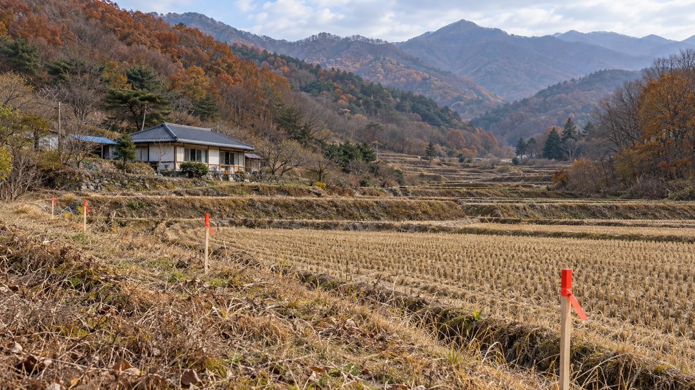

주택 5호 미만이면 이격거리 보호 못 받아…강릉 귀촌 부부 민박집 90m 앞에 태양광 추진

9월 시행 재생에너지법 시행령, 5호 이상 주거지에만 최대 200m 적용하고 조례로 낮추지도 못하게 해…강릉시는 거리로 규제 어렵다는 입장, 영광 풍력 소음 마을은 4년째 소송
개정 재생에너지법 시행령이 주택 5호 이상인 곳에만 발전시설 이격거리를 적용하도록 하면서, 집이 흩어져 있는 농촌에서는 주택 코앞에도 태양광이 들어설 수 있게 됐다. 강원 강릉시 구정면 덕현리에서는 지난해 서울에서 귀촌한 30대 부부가 올해 4월 문을 연 농어촌 민박집에서 90m 떨어진 곳에 9,430㎡와 3,078㎡ 규모의 태양광 두 곳이 추진되고 있다. 기존 강릉시 도시계획 조례는 부지 경계에서 직선 200m 안에 주택이 없어야 하고 주택이 10호 이하이면 소유자 전원의 동의를 받도록 했지만, 9월 18일 시행된 시행령은 태양광 이격거리를 주택 5호 이상인 곳에 한해 최대 200m 범위에서 정하게 했고 지자체가 조례로 이 기준을 낮추는 것도 허용하지 않는다. 덕현리 예정지 200m 안의 주택은 민박집을 포함해 4호여서 보호 대상에서 빠졌고, 예정지 논을 빌려 짓는 임차농은 2027년 공사가 시작되면 농사를 이어 갈 수 있을지 걱정하고 있다. 강릉시 에너지과는 시행령 시행 뒤 논밭 태양광 문의가 쏟아지고 있지만 상위 법령이 바뀐 만큼 거리를 이유로 사업자를 규제하기는 어렵다는 입장이다. 최대 1,500m 범위인 풍력 이격거리도 5호 이상에만 적용되는데, 2019년부터 가동된 풍력기가 민가에서 300~500m 떨어져 있는 영광군 염산면 두우3리 주민들은 2022년 중앙환경분쟁조정위원회의 배상 결정을 업체가 받아들이지 않아 4년째 소송을 벌이며 같은 피해가 되풀이될까 걱정하고 있다.
시민에너지 관점
주택 4호 이하 마을이 이격거리 보호에서 빠지자 5호 미만 부지를 찾는 부동산업자까지 움직인다는 현장의 이야기는, 거리 규제를 푸는 것만으로는 주민 수용성이 생기지 않는다는 점을 보여 준다. 지자체마다 들쭉날쭉한 이격거리 조례가 재생에너지 보급을 막아 왔으니 완화는 불가피하다는 반론에도 일리가 있지만, 그 빈자리를 외부 사업자의 농지 매입이 채우면 갈등은 거리 문제에서 마을 안으로 옮겨 갈 뿐이다. 네덜란드 노르트브라반트주가 대형 태양광·풍력 개발사에 지역 소유 50%를 위한 노력을 입증하도록 한 것처럼, 설비가 들어서는 곳의 주민이 공동 소유자로 참여할 때 반대는 줄고 이익은 지역에 남는다. 정부는 이격거리 완화와 함께 주민 동의 절차와 주민 지분 참여를 인허가 조건으로 묶는 보완책을 서둘러야 한다.
출처: 농민신문 2026-10-19 이시내 원문 보기
住宅5戸未満なら離隔距離の保護なし…江陵に帰村した夫婦の民泊の90m先で太陽光計画
9月施行の再生可能エネルギー法施行令、5戸以上の住居地にのみ最大200mを適用し条例での引き下げも認めず…江陵市は距離での規制は難しいとの立場、霊光の風力騒音の村は4年目の訴訟
改正再生可能エネルギー法施行令が、住宅が5戸以上ある場所にのみ発電施設の離隔距離を適用するとしたことで、家がまばらに散らばる農村では住宅のすぐ前にも太陽光発電所が建てられるようになった。江原道江陵（カンヌン）市邱井面徳峴里では、昨年ソウルから帰村した30代の夫婦が今年4月に開業した農漁村民泊から90m離れた場所で、9,430㎡と3,078㎡規模の太陽光2か所の計画が進んでいる。従来の江陵市都市計画条例は、敷地の境界から直線200m以内に住宅がないこと、住宅が10戸以下なら所有者全員の同意を得ることを求めていたが、9月18日に施行された施行令は、太陽光の離隔距離を住宅5戸以上の場所に限って最大200mの範囲で定めるとし、自治体が条例でこの基準を引き下げることも認めていない。徳峴里の予定地から200m以内の住宅は民泊を含めて4戸で保護の対象から外れ、予定地の田を借りて耕作する小作農は、2027年に工事が始まれば農業を続けられるか不安を抱えている。江陵市エネルギー課は、施行令の施行後に田畑での太陽光の問い合わせが殺到しているものの、上位法令が変わった以上、距離を理由に事業者を規制するのは難しいとの立場だ。最大1,500mの範囲で定める風力の離隔距離も5戸以上にのみ適用され、2019年から稼働する風車が民家から300〜500mの距離にある霊光（ヨングァン）郡塩山面トゥウ3里の住民は、2022年の中央環境紛争調整委員会による賠償決定を業者が受け入れず4年にわたり訴訟を続けており、同じ被害が繰り返されることを懸念している。
市民エネルギーの視点
住宅4戸以下の村が離隔距離の保護から外れると、5戸未満の土地を探す不動産業者まで動き出しているという現場の声は、距離規制を緩めるだけでは住民の受容性は生まれないことを示している。自治体ごとにばらばらな離隔距離条例が再エネ普及を妨げてきた以上、緩和は避けられないという反論にも一理あるが、その空白を外部事業者による農地買収が埋めれば、対立は距離の問題から村の内部へ移るだけだ。オランダの北ブラバント（Noord-Brabant）州が大型の太陽光・風力開発事業者に地域所有50%に向けた努力の立証を求めたように、設備が建つ場所の住民が共同所有者として参加するとき、反対は減り利益は地域に残る。政府は離隔距離の緩和とあわせて、住民同意の手続きと住民の持ち分参加を許認可の条件に組み込む補完策を急ぐべきだ。
出典: Nongmin Shinmun (Farmers Newspaper) 2026-10-19 Lee Si-nae 原文を読む
住宅不足5户则不受间隔距离保护…江陵返乡夫妇民宿90米外拟建太阳能电站
9月施行的可再生能源法施行令只对5户以上居住地适用最多200米间隔，且不允许以条例下调…江陵市称难以用距离加以限制，灵光风电噪音村诉讼已进入第4年
修订后的可再生能源法施行令规定，发电设施间隔距离只适用于有5户以上住宅的地方，因此在房屋分散的农村，住宅门前也可能建起太阳能电站。在江原道江陵市邱井面德岘里，一对去年从首尔返乡的30多岁夫妇今年4月开设了农渔村民宿，而距民宿90米处正在推进9,430平方米和3,078平方米两处太阳能项目。江陵市原有城市规划条例要求用地边界直线200米内不得有住宅，住宅在10户以下时须征得全体房主同意；但9月18日施行的施行令规定，太阳能间隔距离仅限于5户以上住宅的地方，在最多200米范围内确定，也不允许地方政府通过条例下调这一标准。德岘里项目用地200米内的住宅连同民宿只有4户，因而不在保护范围内；租地耕种该处稻田的佃农担心，2027年开工后能否继续种地。江陵市能源科表示，施行令实施后在农田建太阳能的咨询大量涌入，但上位法规已经改变，地方政府难以以距离为由限制开发商。最多1,500米范围的风电间隔距离同样只适用于5户以上的地方；在灵光郡盐山面Duu 3里，2019年投运的风机距民宅仅300至500米，当地居民在2022年获得中央环境纠纷调解委员会的赔偿决定后，因企业不接受而打了4年官司，担心同样的伤害会重演。
市民能源视角
住宅4户以下的村庄被排除在间隔距离保护之外后，连寻找不足5户用地的房地产中介也行动起来，这说明仅放宽距离限制并不能带来居民的接受。有人反驳说，各地参差不齐的间隔距离条例一直阻碍可再生能源推广，放宽在所难免，这有一定道理；但如果由外部开发商收购农地来填补这一空白，冲突只会从距离问题转移到村庄内部。正如荷兰北布拉班特省要求大型太阳能和风电开发商证明其为实现50%本地所有所作的努力那样，当设施所在地的居民作为共同所有者参与时，反对会减少，利益也会留在当地。政府在放宽间隔距离的同时，应尽快出台补充措施，把居民同意程序和居民持股参与纳入许可条件。
来源: Nongmin Shinmun (Farmers Newspaper) 2026-10-19 Lee Si-nae 查看原文
Homes in clusters of fewer than five lose setback protection as solar is planned 90m from Gangneung couple's guesthouse
Renewable energy decree in force since September applies setbacks of up to 200m only where there are five or more homes and bars local ordinances from going lower; Gangneung says it cannot regulate by distance, while a Yeonggwang village hit by wind turbine noise is in its fourth year of litigation
An amended enforcement decree of the Renewable Energy Act applies setback distances for power plants only where there are five or more homes, so in rural areas where houses are scattered, solar plants can now be built right in front of homes. In Deokhyeon-ri, Gujeong-myeon, Gangneung, Gangwon Province, two solar projects of 9,430㎡ and 3,078㎡ are planned 90m from a farm guesthouse opened in April this year by a couple in their 30s who moved from Seoul last year. Gangneung's previous urban planning ordinance required that there be no homes within 200m in a straight line of a site's boundary, or the consent of all owners where there were 10 homes or fewer, but the decree that took effect on September 18 lets local governments set solar setbacks of up to 200m only for places with five or more homes and does not allow ordinances to lower that threshold. There are four homes, including the guesthouse, within 200m of the Deokhyeon-ri sites, leaving them outside the protection, and a tenant farmer who rents paddies on the site worries whether farming can continue once construction begins in 2027. Gangneung's energy department says inquiries about solar on farmland have flooded in since the decree took effect, but that with the higher law changed it is hard to regulate developers on the grounds of distance. Wind setbacks of up to 1,500m also apply only to five or more homes, and residents of Duu 3-ri, Yeomsan-myeon, Yeonggwang County, where turbines running since 2019 stand 300 to 500m from homes, have been in court for four years because the operator rejected a 2022 compensation ruling by the Central Environmental Dispute Coordination Commission, and they fear the same harm will be repeated elsewhere.
Citizen Energy View
Reports that real estate brokers are already hunting for sites with fewer than five homes after small hamlets lost setback protection show that loosening distance rules alone does not create local acceptance. There is merit in the argument that patchy local setback ordinances have held back renewables and had to be eased, but if outside developers buying up farmland fill the gap, conflict simply moves from distance disputes to inside the village. As the Dutch province of Noord-Brabant has required large solar and wind developers to show efforts toward 50% local ownership, opposition falls and benefits stay local when residents near a facility take part as co-owners. Alongside easing setbacks, the government should quickly add safeguards that make resident consent procedures and resident equity participation conditions for permits.
Source: Nongmin Shinmun (Farmers Newspaper) 2026-10-19 Lee Si-nae Read the original